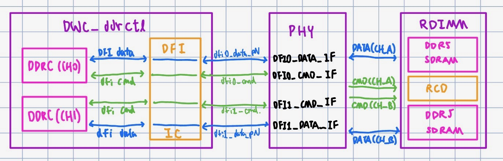
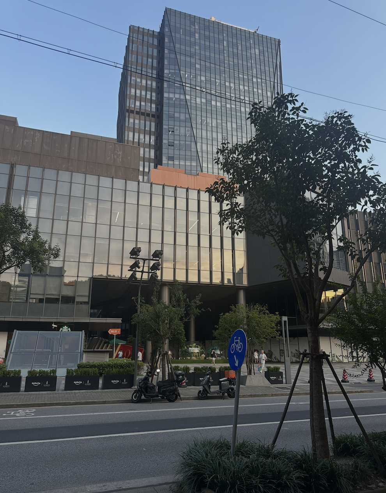
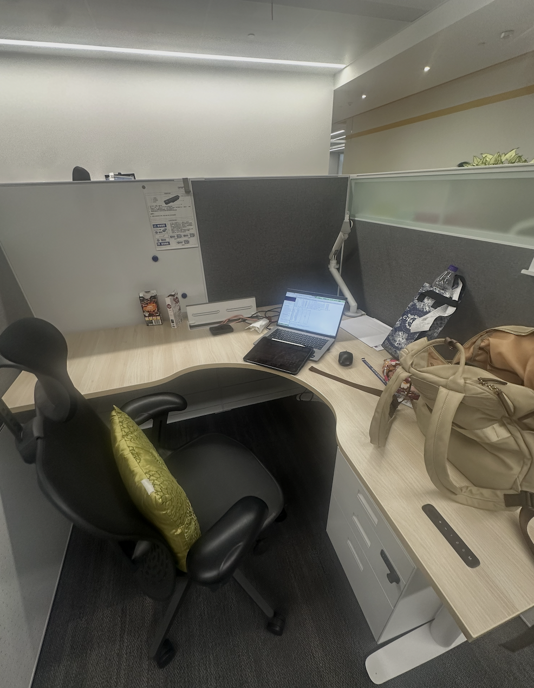

NOTE: Please also read my blog <LINK> on more insights from this internship and China in general!!

I spent a large chunk of Summer 2026 at Synopsys as an IP Field Application Engineer intern, in a role that sits somewhere between engineering and translation. R&D teams build the IP blocks — the USB, PCIe, and DDR controllers licensed into other companies’ chips. FAEs are the ones who sit with a customer’s design team and make sure that IP actually behaves once it’s dropped into someone else’s silicon. They are generalists who know the architecture, which makes this role perfect for someone without too much previous experience like me who also wants to know the larger picture of chip design instead of just the nitty gritty.

My core project was a DDR5 memory controller with an AXI interface, taken through the full arc: generating and writing the RTL, debugging it in simulation, and carrying it through synthesis. Getting the RTL right meant being precise about how the controller talks to both sides of it — DDR5’s own timing and refresh requirements on one end, and on the other, translating those requirements into the AXI handshakes a customer’s SoC would actually issue. Debugging was where the real time went: long stretches in VCS and Verdi, reading waveforms with no context but the trace in front of me, chasing why a transaction wasn’t landing correctly on the bus — closer to detective work than to the clean problem sets of a class. Synthesis was the reality check, watching RTL that behaved correctly in simulation get pushed through constraint-driven optimization and seeing which assumptions survived once timing closure entered the picture. The project pulled me into how layered a modern chip really is: controller and PHY as separate but inseparable pieces, with timing closure quietly shaping every decision made above it.
What surprised me was how directly my consulting background carried over. Underneath the acronyms, the FAE role is a diagnostic, client-facing job, translating between what a customer needs and what the product can actually do, earning trust by being fluent enough to be believed. The instinct I’d built leading case teams turned out to transfer almost without friction.
By the end, I had real fluency across a stack I’d only known in the abstract, from ISA down to synthesized gates, from a system-level requirement down to a single misbehaving handshake. It confirmed something I already suspected: the parts of engineering I care about most live at the interfaces: between hardware and the people trying to integrate it, and between a system’s design and its stubborn physical reality.

My big takeaways from this experience were not just technical, though, but also sociological. In my blog <LINK> in the “thoughts” page, I will talk more about the relationships and differences between China and America both in the tech sector and in terms of general culture, check it out!